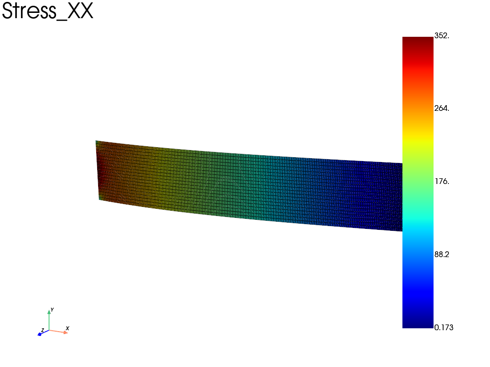
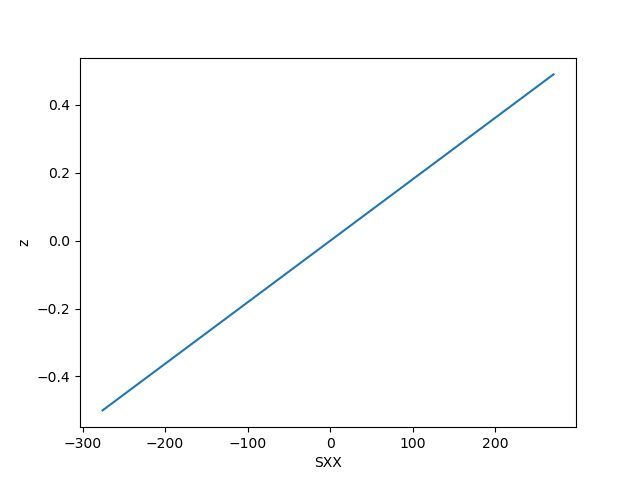

Note
Go to the end to download the full example code.
Plate elements on a cantilever: comparison with beam theory
A thin rectangular plate (100 x 20, thickness 1) is clamped on one end and
loaded by a transverse force at the center of the other end. The homogeneous
section is defined with fedoo.constitutivelaw.ShellHomogeneous and the
linear problem with fedoo.weakform.PlateEquilibrium. Change
geomElementType (tri3, tri6, quad4, quad8, quad9) and
reduced_integration to compare the plate elements.
The tip deflection is compared with the Euler-Bernoulli cantilever value \(F L^3 / (3 E I) \approx -0.02\); the Poisson effect across the width and the transverse shear of the plate make small differences. The through-thickness distribution of \(\sigma_{xx}\) at one Gauss point and the \(\sigma_{xx}\) field on the upper face are plotted.
import os
import fedoo as fd
from matplotlib import pylab as plt
Material, section and mesh
fd.ModelingSpace("3D")
E = 1e5
nu = 0.3
L = 100
h = 20
thickness = 1
F = -10
geomElementType = "quad4" # choose among 'tri3', 'tri6', 'quad4', 'quad8', 'quad9'
# True, False or 'auto'. If True, use selective reduced integration (SRI) for
# linear elements. If 'auto', use the PlateEquilibrium defaults.
reduced_integration = "auto"
save_results = True
material = fd.constitutivelaw.ElasticIsotrop(E, nu, name="Material")
fd.constitutivelaw.ShellHomogeneous("Material", thickness, name="PlateSection")
mesh = fd.mesh.rectangle_mesh(
201, 21, 0, L, -h / 2, h / 2, geomElementType, name="plate", ndim=3
)
nodes_left = mesh.node_sets["left"]
nodes_right = mesh.node_sets["right"]
node_right_center = nodes_right[(mesh.nodes[nodes_right, 1] ** 2).argmin()]
Plate weak form, assembly and problem
fd.weakform.PlateEquilibrium("PlateSection", name="WFplate")
if reduced_integration == "auto":
plate_elm_type = None
elif reduced_integration:
if geomElementType not in ["tri3", "quad4"]:
raise ValueError("SRI plate elements are only available for tri3 and quad4")
plate_elm_type = f"p{geomElementType}sri"
else:
plate_elm_type = f"p{geomElementType}"
if plate_elm_type is None:
assemb = fd.Assembly.create("WFplate", "plate", name="plate")
else:
assemb = fd.Assembly.create("WFplate", "plate", plate_elm_type, name="plate")
pb = fd.problem.Linear(assemb)
# create a 'results' folder and set the desired outputs
if not (os.path.isdir("results")):
os.mkdir("results")
res = pb.add_output(
"results/simple_plate",
assemb,
["Disp", "Rot", "Stress", "Strain"],
output_type="Node",
file_format="vtk",
position=+1,
)
Boundary conditions and solve
Clamped left end (displacements and rotations), transverse force at the center of the right end.
pb.bc.add("Dirichlet", nodes_left, "Disp", 0)
pb.bc.add("Dirichlet", nodes_left, "Rot", 0)
pb.bc.add("Neumann", node_right_center, "DispZ", F)
pb.apply_boundary_conditions()
pb.solve()
I = h * thickness**3 / 12
print("Beam analytical deflection: ", F * L**3 / (3 * E * I))
print(
"Numerical deflection with shell model: ", pb.get_disp("DispZ")[node_right_center]
)
if save_results:
pb.save_results() # save in vtk
Beam analytical deflection: -20.0
Numerical deflection with shell model: -19.62941688758727
Through-thickness stress and stress on the upper face
# stress distribution through the thickness at Gauss point 20
z, StressDistribution = fd.ConstitutiveLaw.get_all()[
"PlateSection"
].get_stress_distribution(assemb, 20)
plt.plot(StressDistribution[0], z)
plt.xlabel("SXX")
plt.ylabel("z")
# XX stress on the upper face (position = +1)
res.plot("Stress", component="XX")


Total running time of the script: (0 minutes 0.592 seconds)